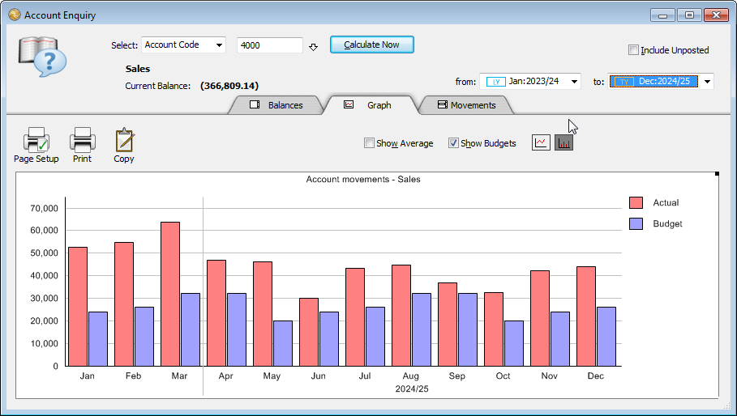

MoneyWorks Manual
Finding Account Balances
- Choose Enquiries>Account Enquiry or press Ctrl-E/⌘-E
The Account Enquiry dialog box is displayed.


- Set the Select pop-up to the type of enquiry
The default is for a single account code, but you can also enquire on ranges of accounts. The options are:
Account Code: An enquiry on a single account code (as specified in the Account Code field).
Range of Account Codes: As selected from the Range of Accounts Window.
Find: A search of the ledger using the simple Find command — see Finding Records using the Search Box.
Advanced Find: A ledger search using the Find options.
Selection: Accounts you have highlighted — see Selecting Records in a List in the Accounts list.
Edit: A list filter you have specified —see List Filters. This allows you store pre-defined enquiries.
- Specify the account(s) and press enter or click Calculate Now
If you enter an invalid code into the Code field, the choices window will be displayed — see Entry and Validation where a Code is Required).
The historic opening, current, and closing balances for the nominated accounts are displayed in the first three columns, with budget information in the right hand three1. The periods are organised in descending order, with the current period in the top row.
Include unposted: The balances shown are the current general ledger balances. If you want to see the effect of any unposted transactions, click in the Include Unposted check box.
For enquiries on a single account code, if the account is departmentalised (Gold only), you can specify either just the account code (which will give totals for the account with all departments), or the code with a department suffix for a specific department.
- To view information for another account, enter the account code and press enter, or for a complex enquiry click the Specify button
Tip: Pressing Ctrl-Shift-E (Windows) or ⌘-Option-E (Mac) will open a new account enquiry window, allowing you to do side-by-side comparisons of multiple enquiries.
Drilling down
You can “drill down” and see the individual transactions that affect the account in a specific period:

- Move the mouse over the row for the period whose transactions you want to see
The cursor changes to a magnifying glass.
- Click the mouse button
The transactions for the nominated period will be displayed.
This is equivalent to clicking the Movements tab, but it only displays the period that you click on.
Graphing Account Balances
To display the tabular information in graphical form:
- Click the Graph tab
The information will be displayed as a graph, with the periods displayed horizontally and the values vertically.

By default the graph displays information for the last twelve periods and automatically selects the units on the y-axis and scales itself to fit in the window.
The values shown will be monthly movements for income and expense accounts, and closing balances for balance sheet items.

To select the graph type: The information can be displayed as a column or line graph by clicking the Column and Line Graph buttons respectively.
To change the periods: You can select the range of periods that you want on the graph by adjusting the From and To period pop-up menus.

To see a balance or drill down: Hold the cursor over the appropriate data point or bar, and the period and balance will be displayed. Click to drill down to the underlying transaction lines.
To show budgets: Set the Show Budgets check box to display a combined graph of actual and budget balances. A legend is automatically provided.
To show the average: Set the Show Average check box to display a line representing the average value of the actual balances displayed, calculated over the selected period range. If sufficient data is available, a moving average will also be displayed to indicate trends.
To print the graph: Click the Print button or press Ctrl-P/⌘-P. The graph will be printed with the same aspect ratio as on the screen.
To copy the graph: Click the Copy button and the graph will be copied onto the clipboard for pasting into another application. Choosing Copy from the Edit menu (or pressing Ctrl-C/⌘-C) copies the text from the account field.
To change the aspect ratio: Drag the graph resize handle (at top right of graph.

The graph size on the screen can be changed by resizing the enquiry window in the normal manner.
Showing Account Movements
To display a list of account movements instead of balances or a graph:
- Click the Movements tab
A list of all transactions against the account will be displayed.

Click on the column headings to sort the list. Double-click an item to view the transaction.
Note: The account code column (if shown) will display in italics for system lines—you cannot see system lines in the transaction itself (they show in transaction list printouts—see To print the transactions in the list as journals.
To change the period range: Use the from and to pop-up menus to adjust the period range for which the transactions will be displayed.
To locate a transaction in the Transaction list: Highlight one or more transactions and click the Related button.
To print the movements: Click the Print icon (or press Ctrl-P/⌘-P.). The list will print out as shown on screen, including any columns you have added using Customise List View. More detailed information, including a running balance, can be printed using the Ledger Report2.
Finding Account Balances for a Range of Accounts
You can extract summary figures for a range of accounts by account type, category, classification, department or by matching the code against a pattern.
- In the Account Enquiry window, set the Select menu to Account Range
The Select Range of Accounts dialog box appears.

- Use the pop-up menus to specify the accounts you want
MoneyWorks will include only those accounts which match all of the criteria that you specify. If you don’t want to use a particular criterion in the matching process, leave its pop-up menu set to Any (in the case of Code, leave an “@” in the Code box).
For example, to obtain figures for all income accounts with a category of XYZ, choose Income from the Type pop-up menu and choose the category XYZ from the Category pop-up menu. Leave the other pop-ups showing “Any” and leave the wildcard character “@” in the Code box.
- Click OK
MoneyWorks will add up the figures for all accounts matching the specified criteria and display them in the historic balance grid.
- To select a new range, click the Specify button
Account Code Matching
To obtain figures for accounts whose account code matches a particular pattern, type a code that includes the wildcard characters “@” and/or “?” into the Code box (leaving the menus set to Any). The pattern can include a question mark (?) wherever you want MoneyWorks to match any single character when searching for account codes. For example, the pattern “?100” will select all 4-character account codes ending with “100” (e.g. 1100, 2100, 3100, 4100, 5100 etc.).
An “@” symbol at the end of the pattern will match any sequence of zero or more characters. For example, the pattern “?1@” will match all account codes with a “1” as the second digit (e.g. 1100, 1101, 110223, 210100 etc).
The pattern can include a department specification as well. E.g. “1??0-?@” will match all (4-digit) departmentalised account codes beginning with a “1” and ending with a “0”. Note that the pattern “1??0-@” (without a “?” following the hyphen) would match both departmentalised and non-departmentalised accounts, since the “@” can match a zero character sequence (as in the code “1000-”, which is recognised as the non-departmentalised account “1000”).
The same account code pattern matching facility is available in the Report Generator—see Account Code.
Finding Balances for an ad hoc Selection of Accounts
You can use the Account Enquiry command in conjunction with the Accounts list to determine the balances for the current selection of accounts in the list. You can choose the Selection option (which will open the Accounts list), or start at the Accounts list (by choosing Show>Accounts, or pressing Ctrl-1/⌘-1). Then
- Highlight the accounts for which you wish to show the balances
Use the Ctrl/⌘ key to make a non-contiguous selection.
- Click the Enquiry toolbar button, or press Ctrl-E/⌘-E
The Account Enquiry window will open, displaying the aggregate balance for the highlighted accounts. This may take a few seconds to calculate.

The Graph and Movements tabs also operate on the selected accounts.
If you click the Specify button you will return to the Accounts list.
Tip: For a quick graph of your Profit and Loss, select the Profit and Loss sidebar, highlight all the accounts in this by pressing Ctrl-A/⌘-A, and click the Enquiries toolbar icon.

Multiple Currencies
In Gold only, if you do an enquiry on a foreign currency account, the amounts will show in the currency of the account. Setting the Base Currency check box will display the balances in the local currency.
If you do an enquiry on accounts of mixed currency, they will display converted to the local currency.
1 The budget information is taken from the A Budget — see Entering Budget Data. ↩
2 Prior to MoneyWorks 7, a report similar to the ledger report could be printed from the Account Enquiry. ↩